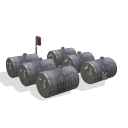

Workshop
Workshops provide the minimum necessary equipment for efficient
production on Mars. Colonists who are assigned to production
workforce can use this facility to increase their output.
Points generated by the production workforce are used to build
improvements and units in a colony.
